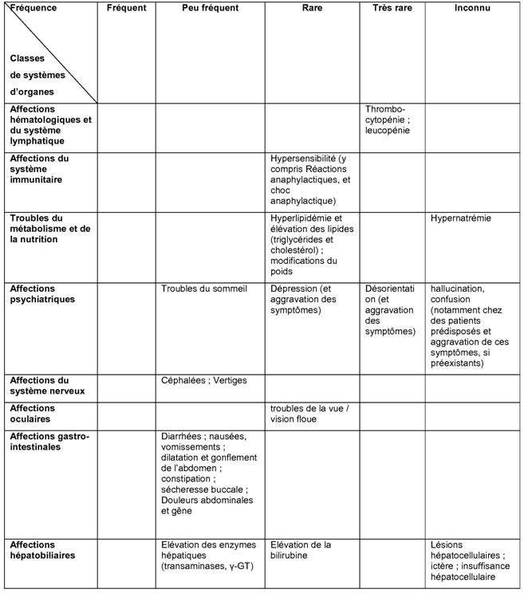

RÉSUMÉ DES CARACTÉRISTIQUES DU PRODUIT
ANSM - Mis à jour le : 11/01/2013
PANTOPRAZOLE SUN 40 mg, poudre pour solution injectable
2. COMPOSITION QUALITATIVE ET QUANTITATIVE
Pantoprazole ..................................................................................................................................... 40 mg
(Sous forme de pantoprazole sodique sesquihydraté)
Pour un flacon.
Pour la liste complète des excipients, voir rubrique 6.1.
Poudre pour solution injectable.
Poudre blanche à pratiquement blanche.
4.1. Indications thérapeutiques
· Œsophagite par reflux gastro-œsophagien.
· Ulcères gastriques et duodénaux.
· Syndrome de Zollinger-Ellison et autres situations hypersécrétoires pathologiques.
4.2. Posologie et mode d'administration
Ce médicament doit être administré par un professionnel de santé sous surveillance médicale appropriée.
L'administration par voie intraveineuse de PANTOPRAZOLE SUN 40 mg est recommandée uniquement lorsque la voie orale est impossible. Des données sont disponibles sur l'utilisation intraveineuse de pantoprazole pour une durée allant jusqu'à 7 jours. Par conséquent, dès que le traitement oral est possible, l'administration intraveineuse de PANTOPRAZOLE SUN 40 mg doit être interrompue et remplacée par la prise orale de 40 mg de pantoprazole.
Posologies recommandées
Ulcères gastriques et duodénaux, œsophagite par reflux gastro-œsophagien.
La dose recommandée par voie intraveineuse est d'un flacon de PANTOPRAZOLE SUN 40 mg (40 mg de pantoprazole) par jour.
Syndrome de Zollinger -Ellison et autres pathologies hypersécrétoires
Dans le traitement au long cours du syndrome de Zollinger- Ellison et autres pathologies hypersécrétoires, la posologie initiale recommandée est de 80 mg de PANTOPRAZOLE SUN 40 mg une fois par jour. Celle-ci peut être augmentée ou diminuée en fonction des besoins, selon les résultats des mesures de la sécrétion acide.
Pour des posologies supérieures à 80 mg par jour, la dose journalière devra être divisée et donnée en 2 prises. Une augmentation temporaire de la posologie supérieure à 160 mg par jour est possible mais ne devra pas excéder la durée nécessaire à la maîtrise de la sécrétion acide.
Chez la majorité des patients, en cas de nécessité d'une maîtrise rapide de la sécrétion acide, une dose initiale de 2 x 80 mg de PANTOPRAZOLE SUN 40 mg est suffisante pour entraîner une décroissance du débit acide jusqu'à l'état basal (< 10 mEq/h) dans l'heure suivant l'administration.
Populations particulières
Patients pédiatriques
L'expérience chez l'enfant est limitée. Par conséquent, l'utilisation de PANTOPRAZOLE SUN 40 mg n'est pas recommandée chez les patients âgés de moins de 18 ans tant que des données complémentaires ne seront pas disponibles.
Insuffisants hépatiques
Chez les patients ayant une insuffisance hépatique sévère, il convient de ne pas dépasser la dose quotidienne de 20 mg de pantoprazole (un demi flacon de PANTOPRAZOLE SUN 40 mg) (voir rubrique 4.4).
Insuffisants rénaux
Aucun ajustement posologique n'est nécessaire en cas d'insuffisance rénale.
Patients âgés
Aucun ajustement posologique n'est nécessaire chez les patients âgés.
Mode d'administration
La solution prête à l'emploi est reconstituée avec 10 ml de solution injectable de chlorure de sodium à 9 mg/ml (0,9 %) dans le flacon contenant la poudre. Pour les instructions de préparation, se reporter à la rubrique 6.6. Cette solution peut être administrée soit par injection directe soit en perfusion lente après dilution dans 100 ml de solution pour perfusion de chlorure de sodium à 9 mg/ml (0,9 %) ou de solution pour perfusion de glucose à 55 mg/ml (5 %). Des contenants en verre ou en plastique doivent être utilisés pour la dilution.
Après préparation, la solution doit être utilisée dans les 12 heures.
L'administration sera réalisée par voie intraveineuse sur 2 à 15 minutes.
Hypersensibilité à la substance active, aux dérivés benzimidazolés ou à l'un des excipients.
4.4. Mises en garde spéciales et précautions d'emploi
Présence de symptômes d'alarme
En présence de l'un des symptômes d'alarme suivants (tels que perte de poids importante et involontaire, vomissements répétés, dysphagie, hématémèse, anémie ou méléna) ou en cas de suspicion ou de présence d'un ulcère gastrique, l'éventualité d'une lésion maligne doit être exclue car le traitement par le pantoprazole peut soulager les symptômes et retarder le diagnostic.
En cas de persistance des symptômes sous traitement, des examens complémentaires seront envisagés.
Insuffisance hépatique
Chez les patients souffrant d'insuffisance hépatique sévère, un bilan des enzymes hépatiques devra être réalisé régulièrement pendant le traitement. En cas d'élévation de celles -ci, le traitement devra être arrêté (voir rubrique 4.2).
Administration concomitante d'atazanavir
L'administration concomitante d'atazanavir et d'un inhibiteur de la pompe à protons n'est pas recommandée (voir rubrique 4.5). Si cette association est inévitable, un suivi clinique étroit (par exemple, charge virale) est recommandé, associé à une augmentation de la posologie d'atazanavir à 400 mg avec 100 mg de ritonavir. Il convient de ne pas dépasser la dose quotidienne de 20 mg de pantoprazole
Infections gastro-intestinales d'origine bactérienne
Le pantoprazole, comme les autres inhibiteurs de la pompe à protons (IPP), peut augmenter le nombre de bactéries normalement présentes le tractus gastro-intestinal supérieur.
Le traitement par PANTOPRAZOLE SUN 40 mg pourrait légèrement augmenter le risque d'infections gastro-intestinales dues à des germes tels que Salmonella et Campylobacter.
4.5. Interactions avec d'autres médicaments et autres formes d'interactions
Effet du pantoprazole sur l'absorption des autres médicaments
En raison de l'inhibition profonde et durable et de la sécrétion d'acide gastrique, le pantoprazole peut réduire l'absorption des médicaments dont la biodisponibilité est pH dépendante (par exemple, les antifongiques azolés tels que le kétoconazole, l'itraconazole, le posaconazole et d'autres médicaments tel que l'erlotinib).
+ Médicament antirétroviraux (atanazavir)
L'administration concomitante d'atazanavir et d'autres médicaments du traitement de l'infection par le VIH, dont la biodisponibilité est pH dépendante, avec un inhibiteur de la pompe à protons peut conduire à une diminution significative de leur biodisponibilité et ainsi influer sur leur efficacité. Par conséquent, l'administration concomitante d'un inhibiteur de la pompe à protons et d'atazanavir n'est pas recommandée (voir rubrique 4.4).
+ Anticoagulants coumariniques (phenprocoumone ou warfarine)
Bien qu'aucune interaction n'ait été observée lors de l'administration concomitante de phenprocoumone ou de warfarine, au cours des études de pharmacocinétique clinique, quelques cas isolés de modification de l'INR ont été rapportés, lors de l'administration simultanée, après la mise sur le marché. En conséquence, chez les patients traités par des anticoagulants coumariniques (tels que phenprocoumone ou warfarine), le suivi du taux de l'INR/taux de prothrombine est recommandé au début et à l'arrêt du traitement, ou en cas d'administration intermittente de pantoprazole.
Autres études d'interaction
Le pantoprazole est fortement métabolisé au niveau du foie, par le système enzymatique du cytochrome P450. La principale voie métabolique consiste en une déméthylation par le cytochrome CYP2C19 et l'autre voie métabolique consiste en une oxydation par le cytochrome CYP3A4.
Les résultats des études d'interactions ont montré que le pantoprazole n'a pas d'effet sur le métabolisme des substances actives métabolisées par les cytochromes CYP1A2 (caféine, théophylline), CYP2C9 (piroxicam, diclofénac, naproxène), CYP2D6 (métoprolol), CYP2E1 (éthanol) ou n'interfère pas avec la glycoprotéine P impliquée dans l'absorption de la digoxine.
Il n'existe pas d'interactions avec les antiacides administrés de manière concomitante.
Des études d'interactions ont été réalisées en administrant le pantoprazole de manière concomitante avec différents antibiotiques (clarithromycine, métronidazole, amoxicilline). Aucune interaction cliniquement significative n'a été observée.
Il n'y a que très peu de données concernant l'utilisation du pantoprazole chez la femme enceinte. Au cours des études de reproduction chez l'animal, des signes de fœtotoxicité ont été observés (voir rubrique 5.3). Le risque potentiel chez l'homme n'est pas connu.
PANTOPRAZOLE SUN 40 mg ne doit être utilisé au cours de la grossesse qu'en cas de réelle nécessité.
Des études menées chez l'animal ont montré que le pantoprazole passait dans le lait maternel. Le passage dans le lait maternel humain a été démontré. La décision de poursuivre/arrêter l'allaitement ou celle de poursuivre/arrêter le traitement par PANTOPRAZOLE SUN 40 mg doit être prise en tenant compte du bénéfice de l'allaitement pour l'enfant et du bénéfice du traitement par PANTOPRAZOLE SUN 40 mg pour la mère.
4.7. Effets sur l'aptitude à conduire des véhicules et à utiliser des machines
Des effets indésirables tels que sensations vertigineuses et /ou troubles visuels peuvent survenir (voir rubrique 4.8). Dans ces conditions, les patients ne doivent pas conduire ou utiliser des machines.
Environ 5 % des patients peuvent être sujets aux effets indésirables. Les effets indésirables les plus fréquemment rapportés sont la diarrhée et les céphalées, survenant chez environ 1 % des patients.
Les effets indésirables rapportés avec le pantoprazole (tableau 1) sont classés par ordre de fréquence selon la convention suivante: très fréquent (≥1/10), fréquent (≥1/100 et < 1/10), peu fréquent (≥1/1000 et < 1/100), rare (≥1/10000 et < 1/1000) et très rare (< 1/10000), inconnu (ne pouvant pas être estimé sur la base des données disponibles).
Pour les effets indésirables identifiés après commercialisation, il n'est pas possible de leur attribuer une fréquence et sont donc mentionnés dans la colonne « fréquence inconnue ».
Au sein de chaque fréquence de groupe, les effets indésirables doivent être présentés suivant un ordre décroissant de gravité.

Aucun symptôme de surdosage n'est connu chez l'homme.
Des doses allant jusqu'à 240 mg par voie intraveineuse ont été administrées pendant deux minutes et ont été bien tolérées.
Le pantoprazole est fortement lié aux protéines et n'est donc pas facilement dialysable.
En cas de surdosage avec des signes cliniques d'intoxication, aucune recommandation thérapeutique spécifique ne peut être donnée, à l'exception d'un traitement symptomatique et de soutien.
5. PROPRIETES PHARMACOLOGIQUES
5.1. Propriétés pharmacodynamiques
Classe pharmacothérapeutique: INHIBITEURS DE LA POMPE A PROTONS, Code ATC: A02BC02.
Mécanisme d'action
Le pantoprazole est un benzimidazole substitué qui inhibe la sécrétion gastrique d'acide chlorhydrique de l'estomac par un blocage spécifique des pompes à protons des cellules pariétales.
Le pantoprazole est transformé en sa forme active dans les canalicules acides de la cellule pariétale, où il inhibe l'enzyme H+/K+ ATPase, c'est-à-dire la phase finale de la sécrétion acide gastrique dans l'estomac.
Cette inhibition est dose-dépendante et concerne à la fois la sécrétion acide basale et stimulée. Chez la plupart des patients, la disparition des symptômes est obtenue en 2 semaines. Comme les autres inhibiteurs de la pompe à protons et les antagonistes des récepteurs H2, le pantoprazole diminue l'acidité gastrique et augmente proportionnellement la gastrinémie. Cette augmentation est réversible. Le pantoprazole se liant avec l'enzyme responsable de la phase terminale, il diminue la sécrétion acide indépendamment de l'origine du stimulus (acétylcholine, histamine, gastrine). L'effet est identique que la voie d'administration soit orale ou intraveineuse.
La gastrinémie à jeun est augmentée sous pantoprazole. En traitement de courte durée, les valeurs de gastrinémie ne dépassent pas les limites supérieures de la normale dans la plupart des cas. Ces valeurs doublent le plus souvent lors des traitements au long cours. Toutefois, une élévation excessive n'a été notée que dans des cas isolés. En conséquence, une augmentation légère à modérée du nombre des cellules endocrines de l'estomac (cellules ECL) a été observée dans de rares cas lors du traitement au long cours (de l'augmentation simple à l'hyperplasie adénomatoïde). Cependant, selon les études menées à ce jour, l'apparition de précurseurs carcinoïdes (hyperplasie atypique) ou de tumeurs carcinoïdes gastriques, tels que décrit chez l'animal (voir rubrique 5.3), n'a pas été observée chez l'homme.
Selon les études menées chez l'animal, une influence du pantoprazole, lors d'un traitement au long cours de plus d'un an, sur les paramètres hormonaux thyroïdiens ne peut pas être exclue.
5.2. Propriétés pharmacocinétiques
Pharmacocinétiques générale
Les paramètres pharmacocinétiques ne varient pas après administration unique ou répétée. Pour des doses allant de 10 à 80 mg, la cinétique plasmatique du pantoprazole est linéaire après administration orale et intraveineuse.
Distribution
La liaison aux protéines sériques est d'environ 98 %. Le volume de distribution est d'environ 0,15 l/kg.
Elimination
Le pantoprazole est presque exclusivement métabolisé par le foie. La principale voie métabolique consiste en une déméthylation par le cytochrome CYP2C19 suivie d'une sulfo-conjugaison, et l'autre voie métabolique consiste en une oxydation par le cytochrome CYP3A4. La demi-vie terminale d'environ 1 h et La clairance est d'environ 0,1 l/h/kg. Il a été noté quelques cas isolés de sujets chez lesquels l'élimination est retardée. Le pantoprazole se fixant spécifiquement aux pompes à protons des cellules pariétales gastriques, sa demi-vie d'élimination ne rend pas compte de sa durée d'action beaucoup plus longue (inhibition de la sécrétion acide).
L'élimination rénale est la principale voie d'excrétion des métabolites (environ 80 %), le reste étant éliminé dans les fèces. Le métabolite retrouvé à la fois dans le sérum et les urines est le déméthylpantoprazole, sous la forme d'un sulfoconjugué. Sa demi-vie d'élimination (environ 1,5 h) n'est pas largement supérieure à celle du pantoprazole.
La clairance est d'environ 0,1 l/h/kg et la demi-vie terminale (t1/2) d'environ 1 h. Il a été noté quelques cas isolés de sujets chez lesquels l'élimination est retardée. Le pantoprazole se fixant spécifiquement aux pompes à protons des cellules pariétales gastriques, sa demi-vie d'élimination ne rend pas compte de sa durée d'action beaucoup plus longue (inhibition de la sécrétion acide).
Selon les études menées chez l'animal, une influence sur les paramètres hormonaux thyroïdiens ne peut pas être totalement exclue lors du traitement au long cours par le pantoprazole.
Populations particulières
Environ 3 % de la population caucasienne présentent un déficit en cytochrome CYP2C19 et sont appelés « métaboliseurs lents ». Chez ces individus, le pantoprazole serait principalement métabolisé par le cytochrome CYP3A4.
Après l'administration d'une dose unique de 40 mg de pantoprazole, l'aire sous la courbe de la concentration plasmatique en fonction du temps, chez les métaboliseurs lents, est 6 fois supérieure à celle des patients présentant une activité normale du cytochrome CYP2C19 (métaboliseurs rapides). Le pic moyen de concentration plasmatique était augmenté d'environ 60 %. Ces résultats n'ont pas d'influence sur les posologies du pantoprazole.
Aucune diminution de la dose de pantoprazole n'est nécessaire chez l'insuffisant rénal (y compris les patients dialysé). Comme chez le sujet sain, la demi-vie d'élimination du pantoprazole est courte. Seules de très faibles quantités de pantoprazole sont dialysables. Bien que le principal métabolite ait une demi-vie légèrement prolongée (2-3 h), l'excrétion reste rapide et aucune accumulation n'est donc observée.
Chez des patients insuffisants hépatiques (classes A et B de Child-Pugh), malgré l'allongement de la demi-vie jusqu'à 7 à 9 heures et l'augmentation de l'ASC d'un facteur 5 à 7, la concentration sérique maximale n'est que très légèrement augmentée d'un facteur 1,5 comparativement au sujet sain.
La légère augmentation de l'ASC et de la Cmax observée chez le sujet âgé comparativement au sujet plus jeune n'a aucune incidence clinique.
Enfants
L'administration intraveineuse de doses uniques de 0,8 à 1,6 mg/kg de pantoprazole chez des enfants âgés de 2 à 16 ans n'a pas montré de relation significative entre la clairance du pantoprazole et l'âge ou le poids. L'ASC et le volume de distribution étaient en accord avec les données chez l'adulte.
5.3. Données de sécurité préclinique
Les données précliniques issues des études conventionnelles de pharmacologie de sécurité, de toxicologie en administrations répétées et de génotoxicité n'ont pas révélé de risque particulier pour l'homme.
Au cours d'une étude de carcinogénicité sur 2 ans chez le rat, sont apparues des néoplasies neuro-endocriniennes. De plus, des papillomes des cellules squameuses ont été trouvés au niveau de l'estomac antérieur du rat. Le mécanisme conduisant à la formation de carcinoïdes gastriques sous l'effet de benzimidazoles substitués a été étudié de façon approfondie et permet de conclure qu'il s'agissait d'une réaction secondaire à l'élévation massive de la gastrinémie survenue chez le rat apparaissant lors de traitements chroniques à dose élevée. Durant les études menées sur 2 ans chez le rongeur, une augmentation du nombre des tumeurs hépatiques a été observée chez le rat et chez la souris femelle, et a été imputée à un métabolisme hépatique important du pantoprazole.
Une légère augmentation des transformations néoplasiques de la thyroïde a été notée dans le groupe de rats recevant la dose la plus élevée (200 mg/kg). L'apparition de ces néoplasies est associée aux modifications induites par le pantoprazole dans la dégradation de la thyroxine au niveau hépatique chez le rat. La dose thérapeutique chez l'homme étant faible, aucun effet sur la glande thyroïde n'est attendu.
Lors d'études sur la reproduction chez l'animal, des signes d'embryotoxicité ont été observés à des doses supérieures à 5 mg/kg. Les études n'ont montré aucune action sur la fertilité ni d'effet tératogène.
Le passage transplacentaire a été étudié chez le rat et semble augmenter au fur et à mesure de l'avancement de la gestation. En conséquence, la concentration du pantoprazole chez le fœtus est brièvement augmentée avant la naissance.
Ce médicament ne doit pas être mélangé avec d'autres médicaments à l'exception de ceux mentionnés dans la rubrique 6.6.
Après reconstitution, la stabilité physico-chimique de la solution reconstituée a été démontrée pendant 12 heures à 25°C.
Toutefois du point de vue microbiologique, le produit doit être utilisé immédiatement.
6.4. Précautions particulières de conservation
A conserver à une température ne dépassant pas 25°C.
Conserver le flacon dans l'emballage extérieur d'origine.
Pour les conditions de conservation du médicament reconstitué, voir rubrique 6.3.
6.5. Nature et contenu de l'emballage extérieur
Flacon verre de type I (Ph. Eur.) de 10 ml, avec capsule en aluminium et bouchon en caoutchouc.
Boîte de 1.
6.6. Précautions particulières d’élimination et de manipulation
La solution prête à l'emploi est reconstituée par ajout de 10 ml de solution injectable de chlorure de sodium à 0,9 % dans le flacon contenant la poudre. La solution reconstituée est claire et incolore. Cette solution peut être administrée telle quelle ou diluée dans 100 ml de solution de chlorure de sodium à 0,9 % ou de solution de glucose à 5 %. Des contenants en verre ou en plastique doivent être utilisés pour la dilution.
Après reconstitution, ou reconstitution et dilution, la stabilité physico-chimique a été démontrée pendant 12 heures à 25°C.
Toutefois du point de vue microbiologique, le produit doit être utilisé immédiatement.
PANTOPRAZOLE SUN 40 mg ne doit pas être préparé ou mélangé avec des solvants autres que ceux mentionnés.
En cas d'utilisation non immédiate, les durées et conditions de conservation avant utilisation relèvent de la seule responsabilité de l'utilisateur et ne devraient pas dépasser 12 heures à une température ne dépassant pas 25°C.
L'administration sera réalisée par voie intraveineuse sur 2 à 15 minutes.
Le contenu du flacon est destiné à un usage unique.
Toute quantité résiduelle après administration, ainsi que toute solution dont l'apparence pourrait être modifiée (par exemple opalescence ou précipitation) doit être éliminée éliminé conformément à la réglementation en vigueur.
7. TITULAIRE DE L’AUTORISATION DE MISE SUR LE MARCHE
SUN PHARMACEUTICALS INDUSTRIES EUROPE BV
POLARISAVENUE 87
2132JH HOOFDDORP
PAYS BAS
8. NUMERO(S) D’AUTORISATION DE MISE SUR LE MARCHE
· 493 445-5 ou 34009 493 445 5 0: Poudre en flacon (verre de type I). Boîte de 1.
9. DATE DE PREMIERE AUTORISATION/DE RENOUVELLEMENT DE L’AUTORISATION
[à compléter par le titulaire]
10. DATE DE MISE A JOUR DU TEXTE
[à compléter par le titulaire]
Sans objet.
12. INSTRUCTIONS POUR LA PREPARATION DES RADIOPHARMACEUTIQUES
Sans objet.
Liste II.